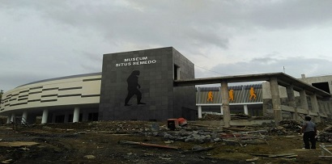

Situs Semedo di Kecamatan Kedungbanteng, Kabupaten Tegal, disiapkan menjadi destinasi wisata yang mendunia oleh pemerintah. Situs arkeologi ini nantinya tidak hanya sebagai museum, namun juga pusat penelitian dan informasi tentang manusia purba, serta tempat rekreasi tentang sejarah dan purbakala.
